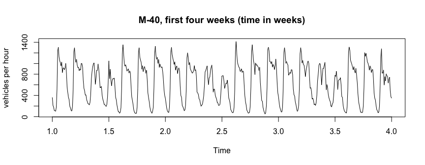
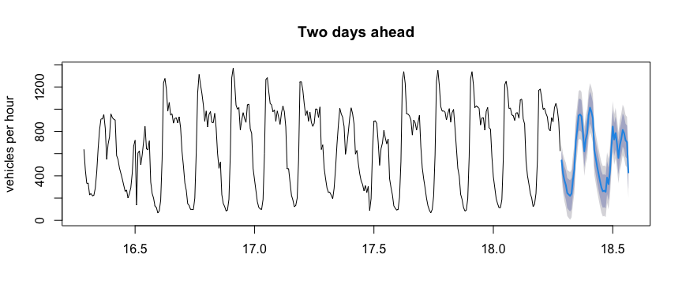

msarima fits ARIMA models with more than one seasonal component. Series observed at high frequency often carry several cycles at once, such as the daily and the weekly pattern of hourly data, while stats::arima() can only take one of them. The package gives each period its own autoregressive, differencing and moving average operator, estimated by conditional maximum likelihood.
-
msarima()fits the model, with support for fixed coefficients and a constant term. -
forecast()produces point forecasts and prediction intervals. -
msarima.sim()andsimulate()simulate from a specification or from a fit. -
sacf()andspacf()draw correlograms that mark the lags of each cycle (ggsacf()andggspacf()for theggplot2versions).
Installation
# install.packages("devtools")
devtools::install_github("danigiro/msarima")Usage
MAD_m40 is the hourly number of vehicles recorded by a sensor on the M-40 ring road of Madrid between February and May 2024. It is an msts object with periods 24 and 168, so the periods do not have to be repeated in every call.
library(msarima)
plot(window(MAD_m40, end = 4), ylab = "vehicles per hour",
main = "M-40, first four weeks (time in weeks)")
Both the daily cycle and the weekly one (weekends clearly lower) are visible. order sets the non-seasonal part, seasonal takes one c(P, D, Q) per period:
fit <- msarima(MAD_m40,
order = c(1, 0, 2),
seasonal = list(c(0, 1, 1), c(0, 1, 1)))
fit
#> Series: MAD_m40
#> MSARIMA(1,0,2)(0,1,1)[24](0,1,1)[168]
#>
#> Coefficients:
#> AR(1) MA(1) MA(2) SMA(1,1) SMA(2,1)
#> 0.8235 -0.0849 -0.0629 -0.7518 -0.8184
#>
#> sigma^2 = 5105.4386 log likelihood = -12933.63
#> AIC = 25879.25 AICc = 25879.28 BIC = 25914.69summary() adds standard errors and significance tests:
summary(fit)
#> Series: MAD_m40
#> MSARIMA(1,0,2)(0,1,1)[24](0,1,1)[168]
#>
#> Coefficients:
#> Estimate Std. Error z value Pr(>|z|)
#> AR(1) 0.82355 0.02055 40.082 < 2e-16 ***
#> MA(1) -0.08489 0.03043 -2.790 0.00527 **
#> MA(2) -0.06288 0.02893 -2.173 0.02976 *
#> SMA(1,1) -0.75184 0.01762 -42.681 < 2e-16 ***
#> SMA(2,1) -0.81843 0.01107 -73.901 < 2e-16 ***
#> ---
#> Signif. codes: 0 '***' 0.001 '**' 0.01 '*' 0.05 '.' 0.1 ' ' 1
#>
#> sigma^2 = 5105.4386 log likelihood = -12933.6262
#> AIC = 25879.2524 AICc = 25879.2834 BIC = 25914.6850Forecasting
fc <- forecast(fit, h = 48)
plot(fc, include = 336, main = "Two days ahead", ylab = "vehicles per hour")
Learn more
vignette("msarima") walks through the package on MAD_m40, from the correlograms to model choice and forecast evaluation.
Reference
Lisi, F. and Grigoletto, M. (2025). Multiple seasonal autoregressive integrated moving average models. Journal of Forecasting, 44(6), 2037-2052. https://doi.org/10.1002/for.3283